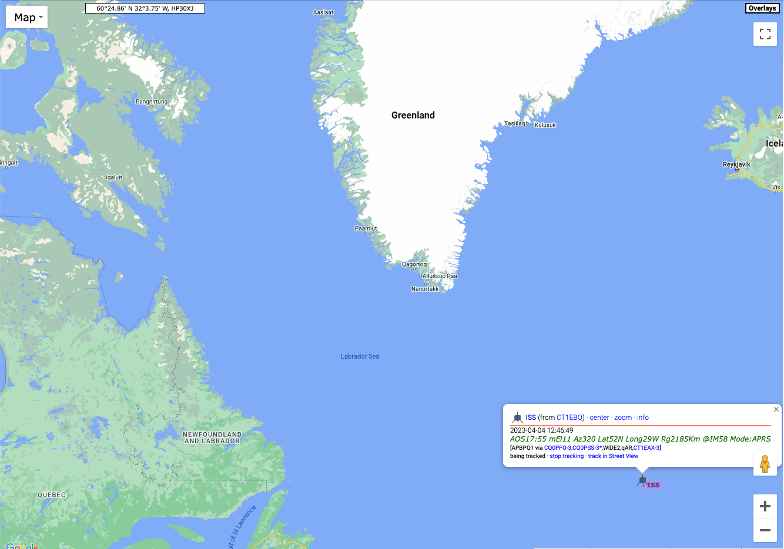

[APRS]
In this quest, we’ll check-in on the Automatic Packet Reporting System (APRS) where hams across the world provide real-time information about their locations and exchange messages, including weather reports.
Visit APRS.fi
The first time you visit this site, it may show you a view of APRS activity near the APRS.fi website author’s home in Finland (hence the .fi web domain).
Feel free to scroll out using the minus (-) button in the lower right hand corner and then click and drag to another location. For example, here is a view near Philadelphia, PA.
Notice that some of the symbols look like vehicles and have a track that appears to show where they’ve been.
Get more info
Mouse over one of those symbols.
You should see a set of lines connecting the vehicle symbol to another one on the map. The lines show where the RF signal from the vehicle traveled before being heard and sent over the Internet to the APRS.fi site.

The figure shows the station K2WB connecting to a home-based relay station N2IVN and the relayed signal from N2IVN being heard by KD2DVW-1.
Click on a mobile (moving) station
Click on a mobile (moving) station’s icon.
A small window will open with information about that station.

Click on the info button in the small window.

Find the International Space Station (ISS)
The International Space Station has an APRS beacon! So, if you have an APRS-enabled radio set up you can hear the ISS when it passes near your location (and you are listening on the ISS APRS frequency of 144.825 MHz in the 2m band).
Enter ISS in the “Track callsign:” window in the upper right of the aprs.fi site.
I did this on the morning of 2023-04-05, and here was the result.
knitr::include_graphics("include/img/aprs-iss-2023-04-05.png")
The ISS was somewhere over the North Atlantic Ocean. I say was, because if you look closely, you’ll see that the last time the ISS was heard on APRS was on 2023-04-04, about 20 hours before the time I took this screenshot. The APRS beacon goes on and off from time to time.